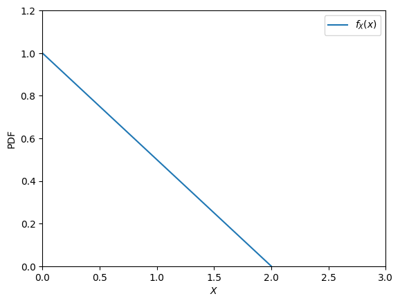
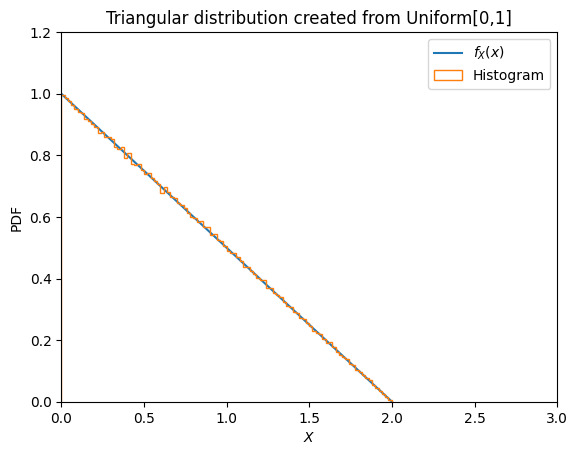

2. การแจกแจงแบบสามเหลี่ยม#
พิจารณาตัวอย่างของฟังก์ชันการแจกแจงแบบสามเหลี่ยม (Triangular distribution) ที่มีสมการคือ
\[\begin{split}
f_X(x) = \begin{cases} -\frac{1}{2} x + 1, & 0 \leq x \leq 2 \\ 0, & \text{otherwise}\end{cases}
\end{split}\]
import numpy as np
import matplotlib.pyplot as plt
def triangular_distribution(x):
return -0.5*x + 1
X = np.linspace(0,2,100)
Y = triangular_distribution(X)
plt.plot(X, Y, label='$f_X(x)$')
plt.xlabel('$X$')
plt.ylabel('PDF')
plt.legend()
plt.axis([0,3,0,1.2])
plt.show()

2.1. การแปลง Uniform distribution ให้เป็น Triangular distribution#
def random_from_triangle(n):
"""
ฟังก์ชันนี้ เป็นฟังก์ชันที่สุ่มค่าจาก Uniform distribution มา n ค่า
แล้วแปลงแต่ละค่าให้เป็น Triangular distribution
"""
U = np.random.uniform(low=0,high=1,size=int(n))
X = 2*(1-np.sqrt(U))
return X
Xrand = random_from_triangle(1e6)
plt.plot(X, Y, label='$f_X(x)$')
plt.hist(Xrand, bins=100, density=True, histtype='step', label='Histogram')
plt.title('Triangular distribution created from Uniform[0,1]')
plt.xlabel('$X$')
plt.ylabel('PDF')
plt.legend()
plt.axis([0,3,0,1.2])
plt.show()

2.2. การหาค่า \(E[X]\) และ \(E[Y]\)#
2.2.1. การหาค่าจากนิยามของตัวแปรสุ่ม#
2.2.2. การประมาณด้วย Law of large numbers#
X = random_from_triangle(1e8) # สุ่มค่าจาก triangular distribution มาร้อยล้านค่า
Y = (X+1)**2
EX = np.mean(X)
EX2 = np.mean(X**2)
print('E[X] = ', EX)
print('E[X^2] = ', EX2)
print('Var[X] = ', EX2 - EX**2)
E[X] = 0.6667109618730095
E[X^2] = 0.6667432114199519
Var[X] = 0.22223970473831833
EY = np.mean(Y)
EY2 = np.mean(Y**2)
print('E[Y] = ', EY)
print('E[Y^2] = ', EY2)
print('Var[Y] = ', EY2 - EY**2)
Show code cell output
E[Y] = 3.0001651351659877
E[Y^2] = 11.934638409066723
Var[Y] = 2.933647570801174
EX = np.mean(X)
EX2 = np.mean(X**2)
EX3 = np.mean(X**3)
EX4 = np.mean(X**4)
print('E[X] = ', EX)
print('E[X^2] = ', EX2)
print('E[X^3] = ', EX3)
print('E[X^4] = ', EX4)
print('Var[Y] =', EX4+4*EX3+6*EX2+4*EX+1-EY**2)
print(np.mean((X+1)**4) - EY**2)
Show code cell output
E[X] = 0.6667109618730095
E[X^2] = 0.6667432114199519
E[X^3] = 0.8001191984991488
E[X^4] = 1.0668584990584367
Var[Y] = 2.933647570801231
2.933647570801174